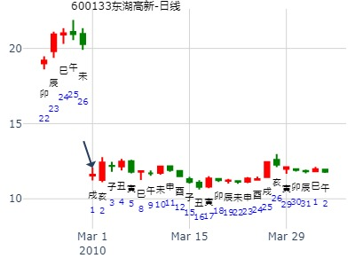

主帖标题: 2009年2月大盘涨跌卦
2月2-6日大盘涨跌卦 Post By：2009-1-23 18:22:00
占事：2月2-6日大盘涨跌?
公历时间：2009年1月23日15时25分 星期五
干支：戊子年 乙丑月 戊辰日 庚申时 (旬空：戌亥)
巽宫：风火家人
六神 伏 神 【本 卦】
朱雀 ▅▅▅▅▅ 兄弟辛卯木
青龙 ▅▅▅▅▅ 子孙辛巳火 应
玄武 ▅▅ ▅▅ 妻财辛未土
白虎 官鬼辛酉金 ▅▅▅▅▅ 父母己亥水
螣蛇 ▅▅ ▅▅ 妻财己丑土 世
勾陈 ▅▅▅▅▅ 兄弟己卯木
主帖标题: 2022年第3周 1月17至1月21日个股300491和600031预测汇总
2022年第3周 1月17至1月21日个股600031预测
公历时间：2022年1月14日15时19分
干 支：辛丑年 辛丑月 丁卯日 戊申时
旬 空：辰巳 辰巳 戌亥 寅卯
神 煞：驿马─巳 桃花─子 日禄─午 贵人─酉，亥
巽宫：风火家人
六神 伏 神 【本 卦】
青龙 ▄▄▄▄▄ 兄弟辛卯木
玄武 ▄▄▄▄▄ 子孙辛巳火 应
白虎 ▄▄ ▄▄ 妻财辛未土
螣蛇 官鬼辛酉金 ▄▄▄▄▄ 父母己亥水
勾陈 ▄▄ ▄▄ 妻财己丑土 世
朱雀 ▄▄▄▄▄ 兄弟己卯木
周涨，一二跌，三四五涨，，，，跌，跌，涨，涨，涨，，，，，周涨
主帖标题: 六爻预测简批个股，费用：币、分随意！
测600133东湖高新在2010年3月份走势
三个五角硬币摇的卦
出生：1979 年 性别：男
测600133东湖高新在2010年3月份走势
公历起卦时间：2010年2月27日11时24分 (手工指定)
干支：庚寅年 戊寅月 戊申日 戊午时 （日空：寅卯）
神煞：驿马－寅 桃花－酉 日禄－巳 贵人－丑，未
巽宫：风火家人 巽宫：风火家人
六神 伏神 本 卦 变 卦
朱雀 兄弟辛卯木 ▅▅▅▅▅ 兄弟辛卯木 ▅▅▅▅▅
青龙 子孙辛巳火 ▅▅▅▅▅ 应 子孙辛巳火 ▅▅▅▅▅ 应
玄武 妻财辛未土 ▅▅ ▅▅ 妻财辛未土 ▅▅ ▅▅
白虎 官鬼辛酉金 父母己亥水 ▅▅▅▅▅ 父母己亥水 ▅▅▅▅▅
腾蛇 妻财己丑土 ▅▅ ▅▅ 世 妻财己丑土 ▅▅ ▅▅ 世
勾陈 兄弟己卯木 ▅▅▅▅▅ 兄弟己卯木 ▅▅▅▅▅

主帖标题: 测600132重庆啤酒和150031银华鑫利在2012年2月13日-2月17日走势
测600132重庆啤酒在2012年2月13日-2月17日走势
公历起卦时间：2012年2月11日16时33分 (手工指定)
干支：壬辰年 壬寅月 壬寅日 戊申时 （日空：辰巳）
神煞：驿马－申 桃花－卯 日禄－亥 贵人－卯，巳
巽宫：风火家人 巽宫：风火家人
六神 伏神 本 卦 变 卦
白虎 兄弟辛卯木 ▅▅▅▅▅ 兄弟辛卯木 ▅▅▅▅▅
腾蛇 子孙辛巳火 ▅▅▅▅▅ 应 子孙辛巳火 ▅▅▅▅▅ 应
勾陈 妻财辛未土 ▅▅ ▅▅ 妻财辛未土 ▅▅ ▅▅
朱雀 官鬼辛酉金 父母己亥水 ▅▅▅▅▅ 父母己亥水 ▅▅▅▅▅
青龙 妻财己丑土 ▅▅ ▅▅ 世 妻财己丑土 ▅▅ ▅▅ 世
玄武 兄弟己卯木 ▅▅▅▅▅ 兄弟己卯木 ▅▅▅▅▅
测002319乐通股份在2013年走势
男 占事：测002319乐通股份在2013年走势
公历起卦时间：2013年2月14日10时7分 (手工指定)
干支：癸巳年 甲寅月 辛亥日 癸巳时 （日空：寅卯）
巽宫：风火家人 巽宫：风火家人
六神 伏神 本 卦 变 卦
腾蛇 兄弟辛卯木 ▅▅▅▅▅ 兄弟辛卯木 ▅▅▅▅▅
勾陈 子孙辛巳火 ▅▅▅▅▅ 应 子孙辛巳火 ▅▅▅▅▅ 应
朱雀 妻财辛未土 ▅▅ ▅▅ 妻财辛未土 ▅▅ ▅▅
青龙 官鬼辛酉金 父母己亥水 ▅▅▅▅▅ 父母己亥水 ▅▅▅▅▅
玄武 妻财己丑土 ▅▅ ▅▅ 世 妻财己丑土 ▅▅ ▅▅ 世
白虎 兄弟己卯木 ▅▅▅▅▅ 兄弟己卯木 ▅▅▅▅▅
上证指数二三四仨月走势？
时间: 2019-02-06 8时47分
干支: 己亥年丙寅月甲戌日 (旬空: 申酉 )
家人静卦
玄武 ▅▅▅▅▅ 兄弟卯木
白虎 ▅▅▅▅▅ 子孙巳火 应
腾蛇 ▅▅ ▅▅ 妻财未土
勾陈 官鬼酉金▅▅▅▅▅ 父母亥水
朱雀 ▅▅ ▅▅ 妻财丑土 世
青龙 ▅▅▅▅▅ 兄弟卯木
主帖标题: 展望：恭测上证己亥年-壬寅年哪年是顶？
恭测上证己亥年-壬寅年哪年是顶？
男 占事：没填
公历起卦时间：2020年2月23日16时8分 (电脑自动)
干支：庚子年 戊寅月 丙申日 丙申时 （日空：辰巳）
巽宫：风火家人 巽宫：风火家人
六神 伏神 本 卦 变 卦
青龙 兄弟辛卯木 ▅▅▅▅▅ 兄弟辛卯木 ▅▅▅▅▅
玄武 子孙辛巳火 ▅▅▅▅▅ 应 子孙辛巳火 ▅▅▅▅▅ 应
白虎 妻财辛未土 ▅▅ ▅▅ 妻财辛未土 ▅▅ ▅▅
螣蛇 官鬼辛酉金 父母己亥水 ▅▅▅▅▅ 父母己亥水 ▅▅▅▅▅
勾陈 妻财己丑土 ▅▅ ▅▅ 世 妻财己丑土 ▅▅ ▅▅ 世
朱雀 兄弟己卯木 ▅▅▅▅▅ 兄弟己卯木 ▅▅▅▅▅
主帖标题: 2月13日至2月17日上证大盘预测
公历时间：2023年2月12日16时7分 农历时间：癸卯年 正月二十二日申时
干 支：癸卯年 甲寅月 辛丑日 丙申时
旬 空：辰巳 子丑 辰巳 辰巳
神 煞：驿马─亥 桃花─午 日禄─酉 贵人─寅，午
巽宫：风火家人
六神 伏 神 【本 卦】
螣蛇 ▄▄▄▄▄ 兄弟辛卯木
勾陈 ▄▄▄▄▄ 子孙辛巳火 应
朱雀 ▄▄ ▄▄ 妻财辛未土
青龙 官鬼辛酉金 ▄▄▄▄▄ 父母己亥水
玄武 ▄▄ ▄▄ 妻财己丑土 世
白虎 ▄▄▄▄▄ 兄弟己卯木
测600850华东电脑2012年3月19日-3月30日走势
公历起卦时间：2012年3月18日9时53分 (手工指定)
干支：壬辰年 癸卯月 戊寅日 丁巳时 （日空：申酉）
神煞：驿马－申 桃花－卯 日禄－巳 贵人－丑，未
巽宫：风火家人 巽宫：风火家人
六神 伏神 本 卦 变 卦
朱雀 兄弟辛卯木 ▅▅▅▅▅ 兄弟辛卯木 ▅▅▅▅▅
青龙 子孙辛巳火 ▅▅▅▅▅ 应 子孙辛巳火 ▅▅▅▅▅ 应
玄武 妻财辛未土 ▅▅ ▅▅ 妻财辛未土 ▅▅ ▅▅
白虎 官鬼辛酉金 父母己亥水 ▅▅▅▅▅ 父母己亥水 ▅▅▅▅▅
腾蛇 妻财己丑土 ▅▅ ▅▅ 世 妻财己丑土 ▅▅ ▅▅ 世
勾陈 兄弟己卯木 ▅▅▅▅▅ 兄弟己卯木 ▅▅▅▅▅
风火家人静卦，3.30周大盘，3月第5周。.md
时间: 2015-03-26 8时44分
干支: 乙未年己卯月辛丑日 (旬空: 辰巳 )
家人静卦
腾蛇 ▅▅▅▅▅ 兄弟卯木
勾陈 ▅▅▅▅▅ 子孙巳火 应
朱雀 ▅▅ ▅▅ 妻财未土
青龙 官鬼酉金▅▅▅▅▅ 父母亥水
玄武 ▅▅ ▅▅ 妻财丑土 世
白虎 ▅▅▅▅▅ 兄弟卯木
利女贞。
上证指数3月25-29日行情预测？[六爻预测][原创]再人
起卦时间：2019年3月23日11时3分 起卦方式：手摇铜钱起卦
干支：己亥年 丁卯月 己未日 庚午时 （日空：子丑）
巽宫：风火家人
六神 伏神 本 卦
勾陈 兄弟辛卯木 ▅▅▅▅▅
朱雀 子孙辛巳火 ▅▅▅▅▅ 应
青龙 妻财辛未土 ▅▅ ▅▅
玄武 官鬼辛酉金 父母己亥水 ▅▅▅▅▅
白虎 妻财己丑土 ▅▅ ▅▅ 世
腾蛇 兄弟己卯木 ▅▅▅▅▅
酉日冲兄弟暗动，开跌。 戌日合旺静爻兄弟，还是跌。（如果动爻则合绊）
爻日子孙暗动，涨。子日子孙受克，跌。
丑日白虎值班，大涨3%
下周基本全是涨。因为子孙妻财值班。
主帖标题: 我收集到上证大盘3.30-4.3周卦
9
公历时间：2020年3月28日10时47分
干 支：庚子年 己卯月 庚午日 辛巳时
旬 空：辰巳 申酉 戌亥 申酉
神 煞：驿马─申 桃花─卯 日禄─申 贵人─丑，未
巽宫：风火家人
六神 伏 神 【本 卦】
螣蛇 ▄▄▄▄▄ 兄弟辛卯木
勾陈 ▄▄▄▄▄ 子孙辛巳火 应
朱雀 ▄▄ ▄▄ 妻财辛未土
青龙 官鬼辛酉金 ▄▄▄▄▄ 父母己亥水
玄武 ▄▄ ▄▄ 妻财己丑土 世
白虎 ▄▄▄▄▄ 兄弟己卯木
主帖标题: 洗手静心诚摇下周两大盘走势涨跌情况
我也来占一卦，看下周走势如何？出生年：年 性别：男
占事：下周大盘走势如何？ 起卦方式：手动摇卦-线上排盘系统
公历时间：2007年4月20日21时49分 星期五
干支：丁亥年 甲辰月 甲申日 乙亥时 (旬空：午未)
神煞：驿马—寅 桃花—酉 日禄—寅 贵人—丑，未
巽宫：风火家人
玄武 ▅▅▅▅▅ 兄弟辛卯木
白虎 ▅▅▅▅▅ 子孙辛巳火 应
螣蛇 ▅▅ ▅▅ 妻财辛未土
勾陈 官鬼辛酉金 ▅▅▅▅▅ 父母己亥水
朱雀 ▅▅ ▅▅ 妻财己丑土 世
青龙 ▅▅▅▅▅ 兄弟己卯木
002170芭田股份下周涨跌。风火家人静卦。.md
时间: 2014-04-17 15时24分
干支: 甲午年戊辰月戊午日 (旬空: 子丑 )
家人静卦
朱雀 ▅▅▅▅▅ 兄弟卯木
青龙 ▅▅▅▅▅ 子孙巳火 应
玄武 ▅▅ ▅▅ 妻财未土
白虎 官鬼酉金▅▅▅▅▅ 父母亥水
腾蛇 ▅▅ ▅▅ 妻财丑土 世
勾陈 ▅▅▅▅▅ 兄弟卯木
牛儿兵 占事：600030中信证券巳月走势
公历起卦时间：2015年4月30日13时22分 (手工指定)
干支：乙未年 庚辰月 丙子日 乙未时 （日空：申酉）
巽宫：风火家人 巽宫：风火家人
六神 伏神 本 卦 变 卦
青龙 兄弟辛卯木 ▅▅▅▅▅ 兄弟辛卯木 ▅▅▅▅▅
玄武 子孙辛巳火 ▅▅▅▅▅ 应 子孙辛巳火 ▅▅▅▅▅ 应
白虎 妻财辛未土 ▅▅ ▅▅ 妻财辛未土 ▅▅ ▅▅
腾蛇 官鬼辛酉金 父母己亥水 ▅▅▅▅▅ 父母己亥水 ▅▅▅▅▅
勾陈 妻财己丑土 ▅▅ ▅▅ 世 妻财己丑土 ▅▅ ▅▅ 世
朱雀 兄弟己卯木 ▅▅▅▅▅ 兄弟己卯木 ▅▅▅▅▅
主帖标题: 红五月值得期待----个股看大盘
没填 年 性别：男 占事：没填
排卦：元亨利贞网六爻在线排盘系统 http://www.china95.net
公历起卦时间：2016年4月25日7时24分 (在线摇卦)
干支：丙申年 壬辰月 丁丑日 甲辰时 （日空：申酉）
神煞：驿马－亥 桃花－午 日禄－午 贵人－酉，亥
巽宫：风火家人 巽宫：风火家人
六神 伏神 本 卦 变 卦
青龙 兄弟辛卯木 ▅▅▅▅▅ 兄弟辛卯木 ▅▅▅▅▅
玄武 子孙辛巳火 ▅▅▅▅▅ 应 子孙辛巳火 ▅▅▅▅▅ 应
白虎 妻财辛未土 ▅▅ ▅▅ 妻财辛未土 ▅▅ ▅▅
腾蛇 官鬼辛酉金 父母己亥水 ▅▅▅▅▅ 父母己亥水 ▅▅▅▅▅
勾陈 妻财己丑土 ▅▅ ▅▅ 世 妻财己丑土 ▅▅ ▅▅ 世
朱雀 兄弟己卯木 ▅▅▅▅▅ 兄弟己卯木 ▅▅▅▅▅
五爻子孙临月建生世，平步青云，大盘巳月看涨---待验
起卦人：风生水起。黄金半年内走势。风火家人静卦。.md
时间: 2020-04-03 8时55分
干支: 庚子年己卯月丙子日 (旬空: 申酉 )
家人静卦
青龙 ▅▅▅▅▅ 兄弟卯木
玄武 ▅▅▅▅▅ 子孙巳火 应
白虎 ▅▅ ▅▅ 妻财未土
腾蛇 官鬼酉金▅▅▅▅▅ 父母亥水
勾陈 ▅▅ ▅▅ 妻财丑土 世
朱雀 ▅▅▅▅▅ 兄弟卯木
马后炮：基本未月见顶。
600660巳午未月行情走势？
时间: 2015-05-17 干支: 乙未年辛巳月癸巳日 (旬空: 午未 )
干支：乙未年 辛巳月 癸巳日 己未时 日空亡：午未
巽宫：风火家人 巽宫：风火家人
六神 伏神 本 卦 变 卦
白虎 兄弟卯木 ▅▅▅▅▅ 兄弟卯木 ▅▅▅▅▅
螣蛇 子孙巳火 ▅▅▅▅▅ 应 子孙巳火 ▅▅▅▅▅ 应
勾陈 妻财未土 ▅▅ ▅▅ 妻财未土 ▅▅ ▅▅
朱雀 官鬼酉金 父母亥水 ▅▅▅▅▅ 父母亥水 ▅▅▅▅▅
青龙 妻财丑土 ▅▅ ▅▅ 世 妻财丑土 ▅▅ ▅▅ 世
玄武 兄弟卯木 ▅▅▅▅▅ 兄弟卯木 ▅▅▅▅▅
请高手指点，谢谢！！
主帖标题: 6月7-10日大盘涨跌卦
占事：6月7-10日大盘涨跌？
公历起卦时间：2011年6月3日15时18分 (手工指定)
干支：辛卯年 癸巳月 己丑日 壬申时 （日空：午未）
神煞：驿马－亥 桃花－午 日禄－午 贵人－子，申
巽宫：风火家人 巽宫：风火家人
六神 伏神 本 卦 变 卦
勾陈 兄弟辛卯木 ▅▅▅▅▅ 兄弟辛卯木 ▅▅▅▅▅
朱雀 子孙辛巳火 ▅▅▅▅▅ 应 子孙辛巳火 ▅▅▅▅▅ 应
青龙 妻财辛未土 ▅▅ ▅▅ 妻财辛未土 ▅▅ ▅▅
玄武 官鬼辛酉金 父母己亥水 ▅▅▅▅▅ 父母己亥水 ▅▅▅▅▅
白虎 妻财己丑土 ▅▅ ▅▅ 世 妻财己丑土 ▅▅ ▅▅ 世
腾蛇 兄弟己卯木 ▅▅▅▅▅ 兄弟己卯木 ▅▅▅▅▅
主帖标题: 请各位老师都过来看看，谢谢！
去年买的股票现在为止还赔三分之一，请各位老师看看，今年能否回本？财运如何？
出生：1978 年 性别：女 占事：没填
排卦：元亨利贞网六爻在线排盘系统 http://www.china95.net
公历起卦时间：2016年7月8日12时24分 (在线摇卦)
干支：丙申年 乙未月 辛卯日 甲午时 （日空：午未）
神煞：驿马－巳 桃花－子 日禄－酉 贵人－寅，午
巽宫：风火家人 巽宫：风火家人
六神 伏神 本 卦 变 卦
腾蛇 兄弟辛卯木 ▅▅▅▅▅ 兄弟辛卯木 ▅▅▅▅▅
勾陈 子孙辛巳火 ▅▅▅▅▅ 应 子孙辛巳火 ▅▅▅▅▅ 应
朱雀 妻财辛未土 ▅▅ ▅▅ 妻财辛未土 ▅▅ ▅▅
青龙 官鬼辛酉金 父母己亥水 ▅▅▅▅▅ 父母己亥水 ▅▅▅▅▅
玄武 妻财己丑土 ▅▅ ▅▅ 世 妻财己丑土 ▅▅ ▅▅ 世
白虎 兄弟己卯木 ▅▅▅▅▅ 兄弟己卯木 ▅▅▅▅▅
姓名：端 女 占事：大盘申月
起卦方式：手工指定 易经股市论坛
公历时间：2014年8月8日8时28分
干 支：甲午年 壬申月 辛亥日 壬辰时
旬 空：辰巳 戌亥 (寅卯) 午未
巽宫：风火家人
螣蛇 ▄▄▄▄▄ 兄弟辛卯木
勾陈 ▄▄▄▄▄ 子孙辛巳火 应
朱雀 ▄▄ ▄▄ 妻财辛未土
青龙 官鬼辛酉金 ▄▄▄▄▄ 父母己亥水
玄武 ▄▄ ▄▄ 妻财己丑土 世
白虎 ▄▄▄▄▄ 兄弟己卯木
求测老公出去收钱如何？
时间: 1994-10-10
干支: 甲戌年甲戌月己巳日 (旬空: 戌亥 )
家人静卦
勾陈 ▅▅▅▅▅ 兄弟卯木
朱雀 ▅▅▅▅▅ 子孙巳火 应
青龙 ▅▅ ▅▅ 妻财未土
玄武 官鬼酉金▅▅▅▅▅ 父母亥水
白虎 ▅▅ ▅▅ 妻财丑土 世
腾蛇 ▅▅▅▅▅ 兄弟卯木
官鬼伏藏，待酉日透出必回家。
10月走势
起卦公历：2008年10月4日21时52分(北京时间)。
起卦农历：二○○八年 九月 初六日 亥时。
干支： 戊子年 辛酉月 丁丑日 辛亥时
主变卦 风火家人(巽宫) 之 风火家人(巽宫) [空亡:申、酉]
青龙 ━━━ 兄弟卯木
玄武 ━━━ 子孙巳火 应
白虎 ━ ━ 妻财未土
腾蛇 官鬼酉金 ━━━ 父母亥水
勾陈 ━ ━ 妻财丑土 世
朱雀 ━━━ 兄弟卯木
月线跌
第11期10月6日到10日预测上证指数比赛
起卦方式：手动摇卦
公历时间：2008年10月5日16时32分 星期日
干支：戊子年 辛酉月 戊寅日 庚申时 (旬空：申酉)
神煞：驿马—申 桃花—卯 日禄—巳 贵人—丑，未
巽宫：风火家人
六神 伏 神 【本 卦】
朱雀 ▅▅▅▅▅ 兄弟辛卯木
青龙 ▅▅▅▅▅ 子孙辛巳火 应
玄武 ▅▅ ▅▅ 妻财辛未土
白虎 官鬼辛酉金 ▅▅▅▅▅ 父母己亥水
螣蛇 ▅▅ ▅▅ 妻财己丑土 世
勾陈 ▅▅▅▅▅ 兄弟己卯木
这是摇卦的信息!
主帖标题: 起楼测个股
手摇卦-002600下周涨跌卦
公历时间：2020年11月22日11时33分
干 支：庚子年 丁亥月 己巳日 庚午时
旬 空：辰巳 午未 戌亥 戌亥
巽宫：风火家人
勾陈 ▄▄▄▄▄ 兄弟辛卯木
朱雀 ▄▄▄▄▄ 子孙辛巳火 应
青龙 ▄▄ ▄▄ 妻财辛未土
玄武 官鬼辛酉金 ▄▄▄▄▄ 父母己亥水
白虎 ▄▄ ▄▄ 妻财己丑土 世
螣蛇 ▄▄▄▄▄ 兄弟己卯木
张三汉断：
周测涨
乙策老师断定：
周一涨，周二涨，周三涨，周四跌，周五跌